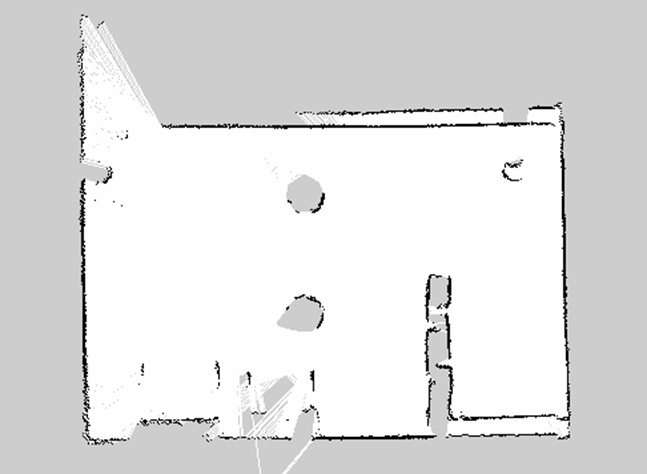

gmappingでSLAMをしよう
SLAM(Simultaneous Localization and Mapping)は、ロボットの自己位置推定と環境地図作成を同時に行う手法です。
ロボット掃除機などの自律移動ロボットでよく用いられており、現在も盛んに研究されている高度な技術です。
ROSには、このSLAM手法を実装したパッケージが存在しており、誰でも簡単にSLAMを利用することが可能となっています。
ROSでSLAMを実装したパッケージはいくつか存在しますが、ここでは「gmapping」を利用して、SLAMを実行してみましょう。
SLAM（gmapping）サンプルは、ライトローバー上部に取り付けられたLiDARで取得した情報をもとに、自己位置の推定と周囲の環境地図の作成を行います。
ライトローバーの移動は手動で行う必要がありますので、ゲームパッド操作サンプルを一緒に使用します。
LiDARは、周囲に存在する物体の位置を検出することができるセンサです。
レーザー光を発射し、その反射を見て物体の有無を確認しています。
視野が広く、計測精度が高いことから、自律移動台車ロボットなどでよく使用されています。
「gmapping」はROSでメジャーなSLAMパッケージのひとつです。
LRFのデータと、車輪の回転数から移動量を計測するオドメトリの情報を用いてSLAMを行います。
「gmapping」を用いて作成した地図の例を次に示します。

図中の黒い部分は障害物が存在する通行不可能な箇所、白い領域は通行可能な場所、灰色は未知領域です。
地図はグリッド状になっており、各グリッドには障害物が存在する確率（占有確率）を示す0～100の値もしくは、未知領域を示す-1の値が与えられます。
この占有確率を用いた地図の表現方法は、ROSの2Dマップ表現方法として標準化されています。
gmappingは絶対に障害物が存在しない0もしくは、絶対に障害物が存在する100の2種の値しか出力しません。
gmappingのセットアップ
次のコマンドでcatkin_wsに移動します。
cd ~/catkin_ws/src
githubからgmappingのソースコードをクローンします。
git clone https://github.com/ros-perception/slam_gmapping
依存パッケージであるopenslam-gmappingのソースコードもクローンします。
git clone https://github.com/ros-perception/openslam_gmapping.git
ビルドしましょう。
catkin build
ビルドエラーが出なければ、gmappingのセットアップは完了です。
navigationのセットアップ
navigationは、ロボットを自律移動させるために必要な様々な機能を持つパッケージを集めたメタパッケージ（パッケージ群）です。
gmappingで作成した地図を保存するためにnavigationの機能を使用するため、あわせてセットアップします。
まずは、依存しているライブラリをインストールします。
sudo apt install libbullet-dev libsdl-image1.2-dev libsdl-dev
次のコマンドでcatkin_wsに移動します。
cd ~/catkin_ws/src
githubからnavigationのソースコードをクローンします。
-bオプションでmelodic-develブランチを指定しています。
git clone -b melodic-devel https://github.com/ros-planning/navigation.git
navigationの依存パッケージであるnavigation_msgsもクローンします。
git clone -b ros1 https://github.com/ros-planning/navigation_msgs.git
もうひとつの依存パッケージgeometry2もクローンします。
git clone -b melodic-devel https://github.com/ros/geometry2.git
ビルドしましょう。
10分程度時間がかかります。
catkin build
ビルドエラーが出なければ、navigationのセットアップは完了です。
gmappingの実行
次のコマンドでgmappingを実行しましょう。
roslaunch lightrover_ros gmapping.launch
gmappingが起動すると次のようにRvizが起動し画面が表示されます。

Rviz上にはLRFが捉えている障害物と、生成される地図がリアルタイムで表示されます。
画面が表示されなかったりLRFのデータが表示されなかったりした場合は、起動中に何らかのエラーが発生した可能性があります。
一度プログラムを終了し、再度実行しなおしてください。
地図が生成され始めたら、メカナムローバーをゆっくりと移動させていきましょう。
移動した範囲の地図が徐々に作成されていくはずです。
急発進や急停止、急旋回などを行うと地図が乱れやすいので注意してください。
地図の保存
作成したmapを保存する方法を説明します。
mapの保存にはmap_serverパッケージのmap_saverノードを使用します。
次のコマンドを実行することで、ホームフォルダに地図の画像ファイル(.pgm)とデータファイル(.yaml)が保存されます。
ファイル名は適宜設定してください。
rosrun map_server map_saver -f ファイル名